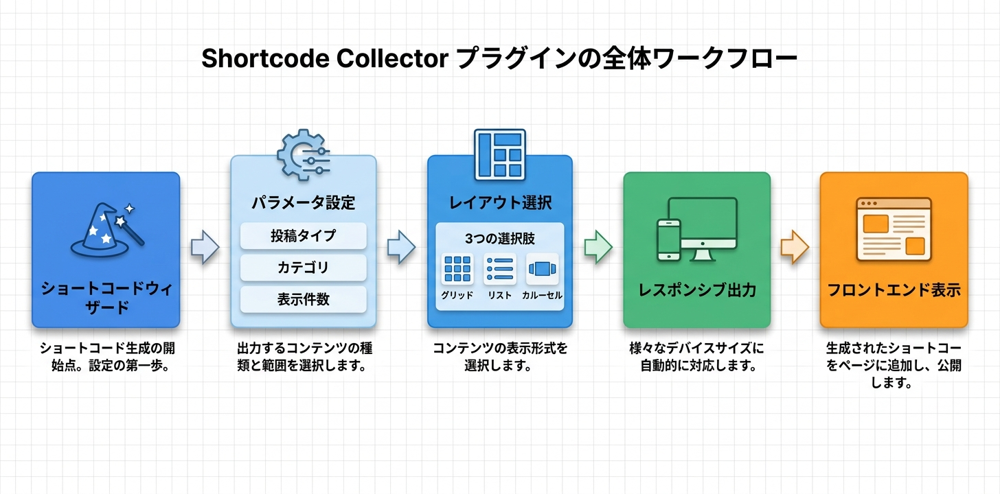

Kashiwazaki SEO Shortcode Collector マニュアル

Kashiwazaki SEO Shortcode Collector は、指定した投稿タイプやカテゴリのコンテンツをショートコードで一覧表示するWordPressプラグインです。グリッド・リスト・カルーセルの3レイアウトに対応し、GUIウィザードでショートコードを簡単に生成できます。
コンテンツの一覧表示は、サイト内の回遊率向上と内部リンク構造の強化に役立ちます。本プラグインはショートコードで投稿タイプ・カテゴリ指定のコンテンツ一覧をグリッド・リスト・カルーセルの3レイアウトで表示します。
主な機能
コンテンツ収集
投稿タイプ・カテゴリ指定でコンテンツをショートコードで一覧表示
3レイアウト
グリッド(1-6列)・リスト・カルーセルの3形式に対応。レスポンシブ設計
ウィザード
GUI操作でショートコードを自動生成。プレビュー機能付き
プラグインの特長
- 投稿タイプ（投稿・固定ページ・カスタム投稿タイプ）とカテゴリを指定してコンテンツを一覧表示
- グリッド（1〜6列）、リスト、カルーセルの3種類のレイアウトに対応
- モバイル・タブレットのブレークポイントを設定可能なレスポンシブ設計
- GUIウィザードでショートコードを自動生成し、プレビューで確認可能
- 4つのAJAXハンドラーによる管理画面の動的操作
- フロントエンド: CSS（20KB）+ JavaScript（41KB）
- 管理画面: ウィザードタブ・設定タブの2タブ構成

SEO・GEO（生成AI最適化）への効果
内部リンク分散の改善
構造化されたコンテンツ一覧は、サイト内の内部リンク分散を改善します。投稿タイプやカテゴリごとに関連コンテンツをまとめて表示することで、検索エンジンのクローラーがサイト構造をより深く理解できるようになります。
ユーザーエンゲージメントの向上
グリッド・リストレイアウトではサムネイルと抜粋を表示し、視覚的にコンテンツを訴求します。これによりユーザーの滞在時間やページ遷移が増加し、エンゲージメント指標の改善につながります。
モバイルファースト対応
レスポンシブ設計により、モバイル・タブレット・デスクトップそれぞれに最適化されたレイアウトを提供します。モバイルファーストインデックスに対応し、すべてのデバイスで快適なユーザー体験を実現します。
クロール可能なURL構造
ショートコードベースのアプローチにより、コンテンツ一覧のURLは静的HTMLとして出力されます。AJAXによる遅延読み込みではないため、検索エンジンのクローラーがすべてのリンクを確実にインデックスできます。
生成AI（GEO）への対応
整理されたコンテンツ一覧は、AIが関連コンテンツを発見し、サイト内のトピック構造を理解するのに役立ちます。カテゴリ別・投稿タイプ別の体系的な一覧表示により、LLMベースのシステムがコンテンツの関連性をより正確に把握できます。
目次（マニュアル構成）
| ページ | 内容 |
|---|---|
| 概要 | プラグインの機能概要、SEO/GEO効果、動作要件 |
| インストール・初期設定 | インストール手順、レイアウト設定、ブレークポイント設定 |
| ショートコードウィザード | ウィザードの使い方、ショートコードパラメータ、プレビュー機能 |
| トラブルシューティング | よくある問題と対処法、動作要件、技術仕様、アーキテクチャ |
動作要件
| 項目 | 要件 |
|---|---|
| WordPress | 5.0 以上 |
| PHP | 7.4 以上 |
| 対応ブラウザ | Chrome、Firefox、Safari、Edge（最新版） |
インストール後すぐに使い始めたい場合は、インストール・初期設定ページに進んでください。